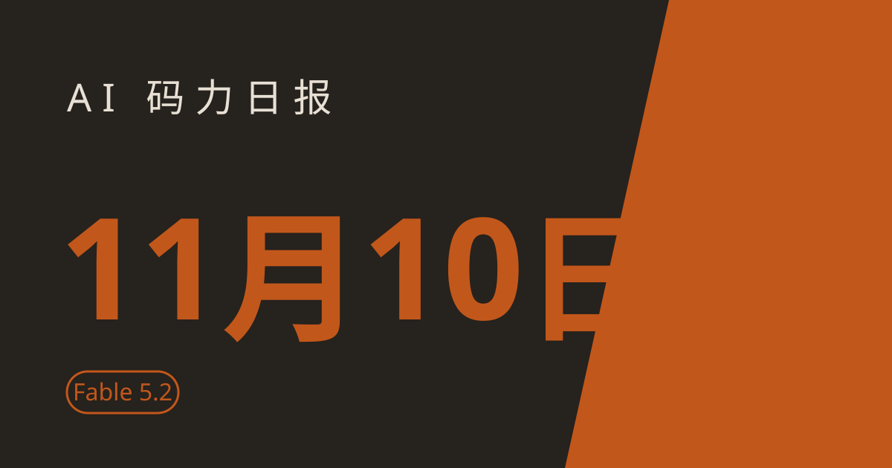

AI 码力日报 · 2026年11月10日

⚡ 一句话速览
- Fable 5.2 来了，1000 个 agent 30 小时证完费马大定理：Anthropic 11 月 9 日发布，编码基准 FrontierCode 2.0 拿到 49.1%，甩开 Opus 5.5 的 45.5%，即日起就是 Claude Code 的默认模型。
- OpenAI 上线 500 美元 Pro 档，Pro 100/500 的 Codex 额度翻倍：9 月底宣布的 Pro 200 降额直接取消，等于变相降价。
- Google AI Plus 11 月 13 日起丢掉 Pro 模型：最便宜的付费档只剩 Flash，想用 Pro 得升到 19.99 美元的 AI Pro；同一天 Gemini Memory 上线，先给美国付费用户看"它记住了你什么"。
- Opus 5.5 到底有没有被阉割：一千多个会话的图表说 11 月 3 日变了，两个公开追踪器说没变——我查了一圈，真相大概率在你自己的设置里。
🤖 今日 AI Coding 动态
Fable 5.2 来了：1000 个 agent 30 小时证完费马大定理，编码基准甩开 Opus 5.5
跟你有啥关系：如果你每天在 Claude Code 里写代码，默认模型今天起换人了——Anthropic 11 月 9 日发布的 Claude Fable 5.2 即日起成为 Claude Code 默认模型，定价和 5.1 一样（输入 $8/百万 token、输出 $40/百万 token），输出速度还快了最多 30%。最抓眼球的数字是它干的一件"秀肌肉"的事：约 1000 个 Fable 5.2 agent 并行 30 小时，在 Lean 里完成了费马大定理的形式化证明——第一次人类做这件事用了 11 天，新证明的 token 只有首次的约三分之一、长度约七分之一；对照组 Opus 5.5 跑了 30 小时几乎没进展。跑分我直接贴官方表，含金量自己看：
| 基准 | Fable 5.2 | Fable 5.1 | Opus 5.5 | GPT-6 Astra | Gemini 4 Carbon |
|---|---|---|---|---|---|
| FrontierCode 2.0（agentic coding） | 49.1% | 32.4% | 45.5% | 42.8% | 41.1% |
| HLE（带工具） | 74.2% | 65.6% | 67.7% | 57.2% | — |
| FrontierSWE v2 | 69.9% | 56.3% | 62.3% | 65.5% | 61.2% |
| Terminal-Bench-Science | 74.6% | 52.6% | 58.7% | 68.1% | 64.8% |
另外还有个"快但贵"的 fast mode：生成速度最高 2.5 倍，价格翻倍（$16/$80）。孪生模型 Mythos 5.2 是同一底模去掉部分网络安全与生物学防护的版本，CVE 漏洞复现 89.6%（Opus 5.5 是 81.3%），只给审核过的机构用，普通人碰不到。我的判断：Fable 这次不是挤牙膏，是 Anthropic 把"多 agent 协作"当成主战场在打——单模型跑分只领先几个点，但 1000 个 agent 协同做 30 小时不崩，这才是它真正想卖的东西；付费用户本周还有额外用量，先拿长任务试，别只拿它写单文件脚本。原文链接
OpenAI 上线 500 美元 Pro 档：Pro 100/500 的 Codex 额度翻倍，Pro 200 降额取消
跟你有啥关系：如果你在付 ChatGPT Pro，你的 Codex 额度可能刚变多了——OpenAI 上线了 500 美元/月的 Pro 500 档，同时把 Pro 100 和 Pro 500 的 Work + Codex 额度直接翻倍，价格不动；9 月 29 日邮件里宣布的 Pro 200 降额也被取消了。Pro 500 是目前唯一能选 Ultrafast 档 GPT-6 Astra 和 GPT-6.1 Sol 的套餐，定位就是"给重度 agent 用户的顶配"。我的判断：这是一次变相降价——OpenAI 9 月底想砍 Pro 200 的额度，被骂回去之后干脆反向操作；但注意官方没说翻倍额度是永久还是限时，先当它是限时优惠来用，别按翻倍后的量去排长期计划。原文链接
OpenAI 完成 110 亿美元新融资，估值 1.25 万亿美元
跟你有啥关系：如果你关心 OpenAI 还能不能继续烧钱——能，而且刚续上。Bloomberg 11 月 6 日报道，OpenAI 完成了新一轮融资的第一批 110 亿美元，公司估值 1.25 万亿美元，低于最初目标。结合上面 Pro 500 的上线看，OpenAI 现在的打法很清楚：一边融大钱撑算力，一边把订阅档位往上拉高、把重度用户锁在高价档。我的判断：估值没达到目标不是坏消息，是市场开始给 AI 公司的烧钱速度定价了；对用户来说，真正要盯的是这笔钱有多少变成算力、多少变成补贴——Pro 额度翻倍就是个信号。原文链接
Gemini Memory 上线：Google 开始让你看"它记住了你什么"
跟你有啥关系：如果你用 Gemini，11 月 9 日起它开始给你一个"记忆总览"页：Gemini 从对话里学到的关于你的信息——偏好、背景、习惯——集中列在一页上，能看、能改、能删。首批只给美国、订阅了 Google AI 计划、用英语的用户，网页端先行（gemini.google.com/personalization-settings），手机端还没影。我的判断：这步走得对——agent 越来越像"替你办事的人"，它记住什么你就得看得见；但上线范围卡得这么窄，说明 Google 自己也在掂量记忆功能的合规风险，国内用户先别等。原文链接
Google AI Plus 11 月 13 日起丢掉 Pro 模型：4.99 美元档只剩 Flash
跟你有啥关系：如果你在付最便宜的 Google AI Plus（$4.99/月），11 月 13 日起 Gemini 应用和搜索 AI Mode 里就选不到 Pro 模型了，只剩 Flash 和 Flash-Lite；想继续用 Pro（Gemini 4 Argon 这档），得升到 $19.99/月的 AI Pro。Google 10 月中旬已发邮件通知，订阅页也已改成只列 Flash。我的判断：这是 Google 在给免费和低价档"瘦身"——10 月 9 日免费档刚砍到只剩 Flash-Lite，现在轮到 Plus；写代码、做复杂推理的人别在 Plus 上耗着，要么升 Pro，要么把重活挪到别的模型上。原文链接
微软 PDD Kit：让 agent 写的 Rust 代码先过数学证明再上线
跟你有啥关系：如果你已经让 agent 写生产代码，最怕的就是"看着能跑、暗地埋雷"——微软研究院 11 月 5 日拿出的 PDD Kit（Proof-Driven Development）就是冲着这个来的：人先批需求，工具把需求转成 Verus 规约，再对 agent 生成的 Rust 逻辑做机器验证，通不过就不让上。目前还是原型，只覆盖了 Rust 鉴权这类小范围场景。我的判断：agent 写代码的下半场拼的不是生成速度，是"怎么证明它没写错"——PDD 这条路现在很窄，但方向是对的，写金融、鉴权这类关键代码的人可以先关注。原文链接
Kimi K3.1 Pro 权重开源：2.8T 参数、1M 上下文，8 张 B300 才能跑
跟你有啥关系：如果你想在本地玩最强的国产开源模型，Moonshot 11 月 4 日把 Kimi K3.1 Pro 的权重放上了 Hugging Face：2.8T 总量、104B 激活的 MoE，1,048,576 token 上下文，Terminal-Bench 4.0 拿了 65.7%，HLE 上 70% 排第二、只输给刚发的 Fable 5.2。API 还是 kimi-k3.1-pro，$2/$10 每百万 token。提醒一句：权重开源不等于人人能跑——官方说法是至少 8 张 B300/GB300 级别的卡，个人用户走 API 更现实。我的判断：国产开源这次是真把压箱底的东西拿出来了，2.8T 这个量级以前只在闭源模型上见过；但 2T 以上的模型正好踩进商务部出口管制征求意见稿的门槛（意见截止 11 月 15 日），后续合规怎么走值得盯一下。原文链接
NVIDIA 董事会启动调查，xAI 加入微软牵头的 AI 基建联盟
跟你有啥关系：两条和算力供给有关的消息放一起看。第一，NVIDIA 董事会 11 月 9 日前后启动了独立调查，起因是报道称 CEO 黄仁勋成为某外国情报行动的目标；第二，NVIDIA 和 xAI 加入了微软、BlackRock、MGX 牵头的 AI Infrastructure Partnership，一起扩建美国 AI 基建。我的判断：前一条是政治噪音，短期不影响芯片供给；后一条才是实质——头部玩家正在把"建数据中心"从各家单干变成抱团干，算力基建的集中度还会继续升。原文链接
🔧 工具更新日志
Cursor 11 月 6 日：Voice Chat with Agents——直接开口指挥 agent 干活
改了什么：Cursor 加了和 agent 的实时语音通话——在 Agents Window、IDE、网页端和 iOS 上都能开口描述改动、随时问 agent 干到哪了，边说边改。对读者有什么用：手头在调样式、改文案这种"说比写快"的活，不用再敲字；由 Grok Voice 驱动，Privacy Mode 下号称零留存。提醒一句：语音聊天和以前的听写模式是两回事，这是双向实时通话；涉密项目先确认 Privacy Mode 策略再开。更新 Cursor 到最新版就能用。更新日志链接
OpenRouter 11 月 6 日：Auto Router 重建，还多了个专攻写代码的 Auto Code
改了什么：OpenRouter 把自动选模型的老路由（openrouter/auto）整个重建了，同时上线 coding 专用的 Auto Code（openrouter/auto-code），按任务自动挑便宜又能打的模型。对读者有什么用：如果你在用 OpenRouter 接免费/便宜模型跑 Claude Code、Codex 这类工具，Auto Code 能帮你少操心"这个任务该用哪个模型"；额度烧得也更明白。配合 xAI 同期给 Grok API 7 个模型默认开隐形水印看，路由层和合规层都在收紧，别只盯着价格。更新日志链接
💬 社区热议
"Opus 5.5 被阉割了吗？"——1400 个会话的图表 vs 两份"没变"的数据
谁在讨论什么：开发者 Shane Melaugh 让 Gemini 4 Argon 分析了他 1400 个 Claude Code 会话，发现 11 月 3 日 18:00 UTC 前后，Opus 5.5 的推理风格突然变了（思考摘要里"I…"开头的比例跳到 61.3%），帖子在 X 上约 49 万浏览，HN 帖 466 分、356 条评论。核心观点/结论：反方证据很硬——T3 的 Theo 查了 45.8 万条 Opus 5.5 响应，推理 token 不降反升（369→413）；LiveNerf 和 NerfBench 两个公开追踪器都没测到回归；真正的原因可能在设置里：Opus 5.5 默认 effort 是 medium（Opus 5 是 high），而且写在设置文件顶层的 effortLevel 对 5.5 之后的新模型根本不生效——不少人几个月来一直以为自己在用 high，实际一直在 medium 跑。Anthropic 截至 11 月 9 日还没公开回应。我的判断：模型有没有变不知道，但"先查自己的 effort 设置再骂模型"这个结论是站得住的，教程在文末。原帖链接
Stack Overflow 2026 调查：Claude Code 65.5%，正式把 Copilot 挤下王座
谁在讨论什么：Stack Overflow 2026 开发者调查（12,255 人）显示，过去一年用过 Claude Code 的开发者占 65.5%，GitHub Copilot 58.7%、Codex 29.5%、Cursor 25.5%；JetBrains 5–7 月的调查里，工作中用 Claude Code 的占 39%、Copilot 21%。核心观点/结论：AI 编程工具的头把交椅一年内易主，agent 形态赢了补全形态；9 月份 agent 发起了 GitHub 上 40% 以上的 PR。我的判断：数字背后是工作流的迁移——不是大家突然不喜欢 Copilot，是"让 agent 自己干一整段活"成了默认姿势。原帖链接
反垄断组织警告：Google、亚马逊、微软、Meta 可能垄断 AI agent
谁在讨论什么：华盛顿反垄断组织 Open Markets Institute 11 月发布 71 页报告，称手握搜索、浏览器、云、社交入口的四巨头最有条件把 agent 市场也收归己有，点名 Meta 的 Muse、微软持股 OpenAI 27%、NVIDIA 计划 130 亿美元收购 Hugging Face 等。核心观点/结论：报告是倡导文件不是调查结论，但它点出的趋势是真的——agent 的入口正在向已有入口集中。我的判断：对开发者来说，真正的风险不是"四巨头变大"，是 agent 的分发渠道被收进几家应用商店式的围墙里；做 agent 产品的人，多留一个不依赖巨头入口的分发路径。原帖链接
Grok API 默认开隐形水印：7 个模型 11 月 7 日起全部带标
谁在讨论什么：xAI 11 月 7 日起给 Grok 4.7、4.6、4.5、4.3 等 7 个 API 模型的文本输出默认加隐形水印，社区在讨论这对"用 Grok API 出内容再声称原创"的影响。核心观点/结论：水印是统计学层面的词频标记，肉眼看不出来，检测要走官方渠道；Anthropic 11 月 3 日也刚把水印扩展到 Mythos 5、Opus 4.7、Sonnet 4.6，欧盟 AI 法案 12 月 2 日的过渡期大限是共同推手。我的判断：水印这事正在从"各家自选"变成"合规标配"，靠 API 批量出内容的人，先确认自己的输出会不会被打标。原帖链接
树莓派 5 16GB 卖到 385 美元：本地跑模型的"丐版服务器"也涨价了
谁在讨论什么：HN 上 130 分、105 条评论的讨论——16GB 版树莓派 5 涨到 385 美元，网友在算这笔账还值不值。核心观点/结论：对想拿树莓派当本地 AI 小服务器的人，涨价后性价比明显缩水，不少人转向二手迷你主机或云端小实例。我的判断：本地跑小模型的门槛正在从"一块开发板"变成"正经花一笔钱"，真想本地玩，不如先算清楚电费+硬件折旧再下单。原帖链接
📱 AI 应用新品
NoMac：按分钟给 AI agent 租一台 Mac，专门用来编 iPhone 应用
是什么：11 月 9 日登上 Product Hunt 的新品：AI agent 想编 iOS 应用但没有 Mac？NoMac 按分钟租给你一台云端 Mac，agent 在上面跑 Xcode、编译打包，用完就停。解决什么问题：个人开发者手头没 Mac、又不想为了一次构建买台机器，或者 agent 需要个隔离的 macOS 环境干活。免费额度/价格：按分钟计费、无订阅（截至撰写时，具体单价未公布）。适合谁：用 agent 做 iOS 开发、但自己没 Mac 的人；提醒一句：价格没公布前先别当主力构建机，先小额试一次再说。原文链接
Empacer：开口说三句话，拿到一份第一周工作计划
是什么：语音优先的 AI 助手，面向小企业主：不用学提示词，语音或文字回答三个问题，它就给你一份第一周的工作计划；刚拿了 Product Hunt 10 月 26 日–11 月 1 日那周的周榜第一（10 月 29 日日榜第一）。解决什么问题：小老板想用 AI 干活但不想研究怎么提问——它把"从空白对话框开始"改成"先问你三个问题再干活"。免费额度/价格：未公布具体价格（截至撰写时）。适合谁：开小店、做自由职业、想让 AI 先帮你把一周排出来的人。原文链接
🐑 今日羊毛
Google AI 学生计划：Pro 免费 1 年，4 倍用量 + 5TB 存储
一句话：美国大学生（18 岁以上）能白拿 1 年 Google AI Pro——4 倍用量上限、5TB 存储，Pro 里的 Gemini 模型随便用。
- 怎么薅：去 Google 学生页验证学生身份后兑换，领完直接在 Gemini 里用。直达链接
- 有效期：须在 2026 年 12 月 31 日前兑换，到期后按 $19.99/月续费，记得设日历提醒取消（截至撰写时）
- 适合谁：在美国上学的学生；国内学生没有这个入口，别浪费时间找
Claude 免费档升级：默认 Sonnet 4.6，还给了文件创建和 Skills
一句话：Claude 免费版这波升级很实在——默认模型换成刚发的 Sonnet 4.6（1M 上下文 beta、编码能力接近 Opus 4.5），还开放了文件创建、connectors、skills 和 compaction 这些以前付费才有的功能。
- 怎么薅：注册 Claude 免费账号直接用，不用绑卡；Sonnet 4.6 已是 claude.ai 和 Cowork 免费档的默认模型。直达链接
- 有效期：长期免费档，每 5 小时和每周仍有用量上限（截至撰写时）
- 适合谁：还没付费、想先拿 Sonnet 4.6 写代码和做长文档的人；注意 Opus、Claude Code 和 Research 仍是付费专属
Google AI Plus 用户注意：11 月 13 日前是 Pro 模型的最后窗口
一句话：还在付 $4.99/月 AI Plus 的话，11 月 13 日之后就选不到 Pro 模型了——这两天把需要 Pro 的重活（长文推理、复杂代码）先跑完。
- 怎么薅：不用领，就是抓紧用；13 日后要么接受 Flash，要么升到 $19.99/月的 AI Pro。直达链接
- 有效期：截至 2026 年 11 月 13 日（截至撰写时）
- 适合谁：AI Plus 订阅用户；已有对话不会被删，但续写会换成别的模型
⭐ 今日 GitHub 热门项目
garrytan/gbrain：给 OpenClaw 配一个"经 Gary Tan 调教过"的大脑
一句话介绍：YC 总裁 Garry Tan 公开的个人 agent 配置：OpenClaw/Hermes agent 的大脑预设，带他自己的工作流、记忆结构和工具编排。解决什么问题：自己搭 agent 最难的是"让它按你的习惯干活"——gbrain 直接给了一套经过实战检验的默认配置，拿来改比从零写省事得多。⭐ 约 32,097，今日新增 215（截至撰写时）。适合：已经在跑 OpenClaw/Hermes、想抄一套成熟配置的人；TypeScript，提醒一句：这是个人配置不是框架，照搬前先看它默认接了哪些工具。项目地址
ruvnet/RuView：不用摄像头，靠 WiFi 信号"看"房间里的人
一句话介绍：把普通 WiFi 信号变成实时空间智能：不用装任何摄像头，就能做存在检测、生命体征监测和室内定位。解决什么问题：想做居家监测、老人看护、安防，又不想在家里装摄像头——WiFi 信号本身就能感知人体动作和呼吸。⭐ 约 103,398，今日新增 245（截至撰写时）。适合：做智能家居、健康监测、隐私敏感场景的人；Rust 写成，提醒一句：效果高度依赖路由器摆位和环境，先拿一台设备验证再铺开。项目地址
homeassistant-ai/ha-mcp：让 Claude、ChatGPT 直接替你配 Home Assistant
一句话介绍：给 Home Assistant 配的 MCP 服务：Claude、ChatGPT 这些助手能直接读你的智能家居配置、帮你写自动化规则、排障。解决什么问题：Home Assistant 自动化写 YAML 又臭又长——现在直接跟 AI 说"晚上 10 点后没人就关灯"，它帮你生成并装好。⭐ 约 5,899，今日新增 31（截至撰写时）。适合：家里跑 Home Assistant、又想用 AI 助手管设备的人；Python 写成。项目地址
google-deepmind/mujoco：DeepMind 开源的物理仿真器，机器人绕不开的那一个
一句话介绍：通用物理仿真器：多关节动力学加接触模拟，做机器人、强化学习的人几乎都用过。解决什么问题：训机器人控制策略之前得有个靠谱的物理世界可仿真——MuJoCo 快、准、文档全，是这个领域的默认选项。⭐ 约 16,872，今日新增 579（截至撰写时）。适合：做机器人仿真、强化学习、物理引擎的人；C++ 写成。项目地址
🤗 Hugging Face 热门模型
moonshotai/Kimi-K3.1-Pro：2.8T 参数开源权重，HLE 70% 的国产旗舰
是什么：Moonshot 刚开源权重的 Kimi K3.1 Pro：2.8T 总量、104B 激活的 MoE，1M 上下文，图文都吃（MoonViT-V2 视觉编码），Terminal-Bench 4.0 65.7%。能干嘛：本地跑需要 8 张以上 B300/GB300 级别的卡，一般人跑不动；现实用法是走 API（kimi-k3.1-pro，$2/$10 每百万 token）或等社区的量化版。下载量约 27,900 次、1,790 个赞（截至撰写时）。适合谁：有算力集群想本地部署旗舰开源模型的人，或者就想试试 HLE 70% 是什么水平的开发者；提醒一句：权重是 MXFP4，部署前先看官方的推理配置。模型地址
🛠️ 值得一试的工具：ProtoMap
是什么：11 月 9 日登上 Product Hunt 的新品：给 AI 编程用的依赖地图——agent 每次开工都要重新"发现"项目里有哪些依赖、谁调用谁，白白烧 token；ProtoMap 把这张图一次性建好，让 agent 直接查。解决什么痛点：agent 在大仓库里越跑越贵，一半 token 花在重复摸索项目结构上。免费额度：未公布具体价格（截至撰写时）。
verdict： 观望——方向是对的，大仓库里 agent 的 token 浪费确实有一半在"认路"上；但产品刚上线一天，省多少 token、有没有实测数据都还没影，先让它跑两周看口碑，别急着接进主力项目。工具地址
🎓 3 分钟小教程：先查 effort 设置，再骂 Opus 5.5 变笨了
前置条件：在用 Claude Code + Opus 5.5，觉得它最近"变笨了"。
- 先看你现在到底在什么 effort 下跑：在 Claude Code 里打
/effort，看当前模型的有效级别——Opus 5.5 默认是 medium，比 Opus 5 的 high 低一档。 - 检查你的旧设置有没有失效：打开
~/.claude/settings.json，如果顶层写着effortLevel，它对 Opus 5.5 及之后的新模型不生效——这是官方文档写明的，9 月 22 日的 2.1.280 更新就改了规则。 - 按模型显式设置：用
/effort按当前模型单独设一个级别（比如 high），或者在设置文件里按模型名写 effort；改完跑几个熟悉的任务，对比一下再下结论。 - 顺手把思考过程打开：设置里把
showThinkingSummaries打开，思考摘要默认是不显示的——看不见思考过程，很容易把"没显示"误判成"没思考"。
预期效果：确认你的 Opus 5.5 是不是一直在 medium 裸奔；如果是，调回 high 后多数"变笨"的感觉会消失。提醒一句：就算调完还是觉得不对，先别急着换模型——Anthropic 官方还没回应，公开追踪器的数据也说没回归。教程参考
数据截至撰写时，仅供参考。